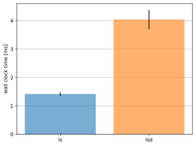
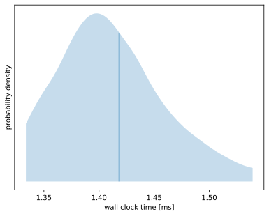
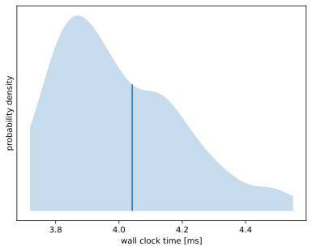

| ls | lsd | |
|---|---|---|
| mean | 1.418 ms | 4.042 ms |
| st dev | 69.64 μs | 342.3 μs |
ls is 2.850 ± 0.279 times faster than lsd
184.97% speedup
Mann-Whitney U-test:
p-value: 0.00
p-value < 0.05 ⇒ assuming distribution is different

3511 runs
| min | median | max |
|---|---|---|
| 1.234 ms | 1.407 ms | 2.422 ms |
| p1 | p5 | p25 | p75 | p95 | p99 |
|---|---|---|---|---|---|
| 1.311 ms | 1.335 ms | 1.376 ms | 1.446 ms | 1.538 ms | 1.673 ms |
| lower bound | estimate | upper bound | |
|---|---|---|---|
| mean | 1.416 ms | 1.418 ms | 1.421 ms |
| st dev | 65.62 μs | 69.64 μs | 75.55 μs |
| systime | 691.1 μs | 692.5 μs | 694.0 μs |
| usrtime | 361.4 μs | 361.9 μs | 362.4 μs |
found 155 outliers (4.41%):
outlying measurements have severe (97.0%) effect on estimated standard deviation

1236 runs
| min | median | max |
|---|---|---|
| 3.540 ms | 3.969 ms | 9.767 ms |
| p1 | p5 | p25 | p75 | p95 | p99 |
|---|---|---|---|---|---|
| 3.646 ms | 3.720 ms | 3.844 ms | 4.151 ms | 4.549 ms | 5.016 ms |
| lower bound | estimate | upper bound | |
|---|---|---|---|
| mean | 4.027 ms | 4.042 ms | 4.066 ms |
| st dev | 315.6 μs | 342.3 μs | 459.9 μs |
| systime | 1.314 ms | 1.318 ms | 1.328 ms |
| usrtime | 1.443 ms | 1.447 ms | 1.455 ms |
found 56 outliers (4.53%):
outlying measurements have severe (97.2%) effect on estimated standard deviation